<div class="container mx-auto flex justify-center lg:justify-start py-5">
  
</div>

<div class="bg-[var(--primary)]">
  <nav class="text-white w-full container mx-auto py-5 flex">
    <i class="fas fa-bars ml-5" onclick="openSidenav()"></i>
    <div
      id="sidenav"
      class="fixed lg:relative top-0 left-0 w-10/12 h-full lg:h-fit lg:w-fit bg-[var(--primary)] md:flex shadow-2xl lg:shadow-none p-4 lg:p-0 z-20"
    >
      

      <ul class="flex flex-col md:flex-row ml-auto gap-x-5">
        <li class="p-3 md:p-0">
          <a href="index.html#top"> Inicio </a>
        </li>
        <li class="p-3 md:p-0">
          <a href="index.html#about"> Acerca de nosotros </a>
        </li>
        <li class="p-3 md:p-0">
          <a href="index.html#products"> Productos y servicios </a>
        </li>
        <li class="p-3 md:p-0">
          <a href="index.html#rewards"> Reconocimientos </a>
        </li>
        <li class="p-3 md:p-0">
          <a href="index.html#labor"> Nuestra Labor </a>
        </li>
        <li class="p-3 md:p-0">
          <a href="index.html#contact"> Contacto </a>
        </li>
        <li class="relative mx-10 hidden lg:flex">
          <button
            class="absolute left-1/2 top-1/2 -translate-x-1/2 -translate-y-1/2 w-24 h-24 bg-[var(--secondary)] text-white rounded-full flex items-center justify-center p-5 hover:cursor-pointer hover:scale-110 transition-all"
          >
            Donar
          </button>
        </li>
      </ul>
    </div>
  </nav>
</div>
